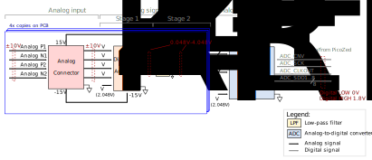
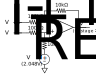

Analog Input¶
This document describes the design considerations and implementation details for the analog input subsystem on the Advanced Motor Drive Controller (AMDC). A block diagram is presented and each component is discussed in detail. Specifications of each component are provided based on the datasheet.
Relevant Versions of AMDC Hardware¶
AMDC REV D
Design Requirements and Considerations¶
There are several design requirements that must be met for the analog signal chain of the AMDC:
Accept truly differential, bipolar, ±10V (max) signals at each of the differential analog inputs.
Synchronously digitize all differential analog inputs at the same time (no multiplexing).
Operate the ADC fast enough such that the sampling can be aligned to the PWM carrier waveform (>100ksps throughput on all channels).
Ensure there are no possible ground loops by using high impedance inputs for the differential voltages.
Ensure a high common-mode rejection ratio (CMRR) for the differential inputs.
Ensure the analog signal chain has minimal noise.
As mentioned above, the analog input to the AMDC should be bipolar differential with the voltage within ±10V. Then, the analog front-end converts this into a single-ended pseudo-differential signal which is needed by the analog-to-digital converter (ADC). More information on the ADC input types and their definitions can be found here.
Block Diagram / External Connections¶

Analog connectors¶
The analog signal chain of the AMDC can receive up to 8 bipolar differential analog inputs (16 signals in total – 8 positive and 8 negative). There are 4 analog connectors, each receiving up to 2 differential inputs. There are also ESD protection devices located on the Analog Pn and Analog Nn signals immediately after the connectors to protect the sensitive analog electronics.
A table of the pin mappings for the analog connectors is shown below:
Pin number |
|
|
|
|
|---|---|---|---|---|
1 |
|
|
|
|
2 |
|
|
|
|
3 |
+15V |
+15V |
+15V |
+15V |
4 |
|
|
|
|
5 |
-15V |
-15V |
-15V |
-15V |
6 |
|
|
|
|
7 |
|
|
|
|
8 |
|
|
|
|
The location of these 4 analog connectors in the AMDC (stacked as 2 x 2) is shown below:

In this picture, the top left connector (when looking from the right side) corresponds to the Analog connector 1 in the block diagram. The top right connector is the Analog connector 2, the bottom left is the Analog connector 3, and the bottom right is the Analog connector 4.
More detailed information on the analog connectors can be found in the datasheet.
Difference amplifiers¶
Analog input signals should be conditioned before being sampled by the ADC. The first stage of this conditioning is to decrease the voltage level. These are implemented using 4 INA2143UA difference amplifier chips. Each chip has two op amps (8 op amps in total), each of which receives one differential analog input. These ICs require a ±15V supply which they receive from the AMDC. Each op amp is configured as the non-inverting amplifier shown below:

The relationship between the amplifier input and output is as follows: \( V_i = V_\text{REF} + 0.1 (V_i^+ - V_i^-) \)
where \(i = 1, 2, 3, \ldots, 8\). The value \((V_i^+ - V_i^-)\) is the bipolar differential input coming from the analog connectors and Vi is the output of the op amp which is fed to a low-pass filter (next subsection). VREF = 2.048V is supplied from the AMDC and the 0.1 gain is set using the INA2143UA’s internal resistors (laser trimmed during IC fab to create a precisely matched set). This results in a very high CMRR. The differential input to the op amp can be between ±20V (AC/DC, each input between ±10V), which means the output can be in the range of 0.048V and 4.048V. The voltage level at each stage of the analog signal chain is shown by a red color in the block diagram.
More detailed information on the operating conditions of the op amp can be found in the datasheet.
Low-Pass Filters (LPFs)¶
After the analog input voltage levels are decreased (stage one), stage two uses low-pass filters to prevent high-frequency noise from reaching the ADCs that could otherwise result in aliasing. To implement this, simple first-order RC filters are used for each analog input:

The cutoff frequency of the filter is selected based on the resistance and capacitance values:
The main purpose of these LPFs is for anti-aliasing. They are nominally set to 50kHz (a resistor with R = 100Ω and a capacitor with C = 33nF) since the default ADC sampling rate used by the AMDC is 100kHz. Users of the AMDC may decide to use different RC values (to obtain a different filter bandwidth) based on their control requirements.
ADC¶
After the analog input signal passes through the analog front-end (voltage level decreased in stage one and high-frequency noise removed in stage two), it is sampled by the ADC. The LTC2320-14 high speed octal 14-bit + sign successive approximation register (SAR) ADC is used for this purpose which can receive up to 8 inputs. The ADC is supplied by 5V and 1.8V.
Each analog input to the ADC is configured as a pseudo-differential bipolar signal. Its positive input signal is the single-ended LPF output that can swing between 0.048V and 4.048V, and its negative input signal is at VREF = 2.048V, resulting in a differential input span of ±2V that is digitized by ADC.
The ADC has a digital serial data output for each analog input (8 digital outputs in total). The output signals use 1.8V logic and are directly connected to the PicoZed. Three additional digital signals (ADC_CNV, ADC_SCK and ADC_CLKOUT) are used by the AMDC to manage the signal conversion process.
To view the mapping between the AMDC schematic labels, PicoZed pins, and Zynq-7000 balls used in Vivado, take a look at the analog section of the pin mapping document.
More detailed information on the operating conditions of the ADC can be found in the datasheet.
PCB Layout¶
Analog connectors, difference amplifier chips and LPFs are located on the top layer, while ESD protection chips are located on the bottom layer. The bottom layer is used to route the signals from the analog connectors to the ESD protection chips and the difference amplifiers, and from the LPFs to the ADC. The top layer is used to route the signals from difference amplifiers to the LPFs. All signal traces have a 6mil thickness. Supply and ground traces connected to the chips have a thickness of 10mil.